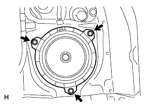
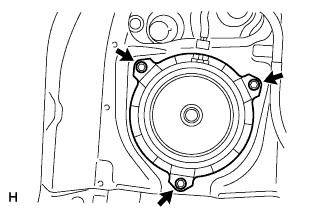

スピーカASSY RR 取り外し |
| 1. フロントドアスカッフ プレート RH取りはずし |
 |
手で上方に引いてツメのかん合をはずし、フロントドアスカツフプレートＲＨを取りはずす。
| 2. フロントドアスカッフ プレート LH取りはずし |
 |
手で上方に引いて車両後方からツメのかん合をはずし、フロントドアスカツフプレートLHを取りはずす。
| 3. フロントドア オープニングトリム ウェザストリップ RH取りはずし |
| 4. デッキサイドトリム カバー FR LH取りはずし |
 |
手で車両前方に引いてツメのかん合をはずし、デツキサイドトリムカバーFR LHを取りはずす。
| 5. リヤドア オープニングトリム ウェザストリップ LH切り離し |
| 6. フロントシート アウタベルトASSY RH取りはずし（フロアアンカ部） |
ボルトをはずし、フロントシート アウタベルトASSY RH（フロアアンカ部）を取りはずす。
| 7. リヤシートバックASSY取りはずし（リヤシート一体可倒式） |
リヤシートバツクを前倒位置にする。
 |
ボルト2本取り付け部のクリップをはずす。
 |
リヤシートバツクカバーをめくりボルト2本をはずし、リヤシートバツクASSYを取りはずす。
| 8. リヤシートバックASSY RH取りはずし（リヤシート分割可倒式） |
| 9. リヤシートバックASSY LH取りはずし（リヤシート分割可倒式） |
リヤシートバツクを前倒位置にする。
 |
ボルト2本取り付け部のクリップをはずす。
|
リヤシートバツクカバー下部をめくりボルト2本をはずし、リヤシートバツクを取りはずす。
| 10. リヤシートクッションASSY取りはずし（リヤシート一体可倒式） |
前部のロックのレバーを図の矢印の方向に押してかん合をはずす。
リヤシートベルトを、リヤシートクッションカバー & パッド後部のゴムバンドに通す。
 |
リヤシートクッションASSY後部のフックのかん合をはずし、リヤシートクッションASSYを取りはずす。
| 11. リヤシートクッションASSY取りはずし（リヤシート分割可倒式） |
リヤシートクッションASSY前側をリヤシート クッション ロック ストライカにロックさせる。
 |
リヤシートバックヒンジRHよりスナップリングを取りはずす。
リヤシートクッションASSY右側ブラケットの、リヤシートヒンジRHを引き抜いて取りはずす。
 |
ボルトをはずし、リヤシ－トヒンジLHを取りはずす。
リヤシートクッションASSYのリヤシート フックASSY RHを引き、リヤシートクッションASSY前部のかん合をはずす。
リヤシートベルトを、リヤシートクッションカバー & パッド後部のゴムバンドに通す。
リヤシートクッションASSYを取りはずす。
| 12. リヤシート 3ポイントタイプ ベルトASSY OUT RH取りはずし（フロアアンカ部） |
ボルトをはずし、フロントシート アウタベルトASSY RH（フロアアンカ部）を取りはずす。
| 13. リヤシート3ポイントタイプ ベルトASSY OUT LH取りはずし（フロアアンカ部） |
ボルトをはずし、リヤシート 3ポイントタイプ ベルトASSY OUT LH（フロアアンカ部）を取りはずす。
| 14. リヤフロア カーペット取りはずし |
| 15. スペアホイール カバーASSY取りはずし |
| 16. バックドア ウエザストリップ取りはずし |
| 17. バックドアスカッフ プレート取りはずし |
 |
クリップ2個を取りはずす。
トリムカバー端部より手で上方に引き、クリップのかん合をはずしてバツクドアスカツフプレートを取りはずす。
| 18. クォータトリム パネルASSY FR RH取りはずし |
| 19. デッキトリムサイド パネルASSY RH取りはずし |
 |
クリップおよびツメのかん合を取りはずし、デツキトリムサイドパネルASSY RHを取りはずす。
| 20. スピーカASSY RR取りはずし |
|  |
コネクターを切り離す。
ボルト3本をはずし、スピーカASSY RR LHを取り外す。
| 21. デッキトリムサイド パネルASSY LH取りはずし |
 |
サイドボードを手で車両内側方向に引き、クリップおよびツメのかん合をはずし、デツキトリムサイドパネルASSY LＨを取りはずす。
| 22. スピーカASSY RR取りはずし |
|  |
コネクターを切り離す。
ボルト3本をはずし、スピーカASSY RR RHを取り外す。